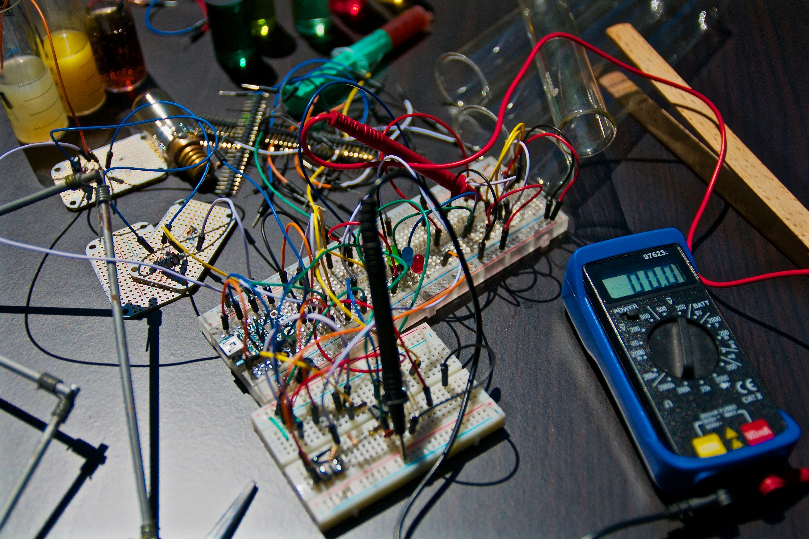

Mechanical Engineering
Mechanical engineering is a diverse and multidisciplinary field that involves the design, analysis, and manufacturing of mechanical systems and components. It encompasses a broad range of applications, from traditional machinery and systems to cutting-edge technologies such as robotics and nanotechnology. Mechanical engineers play a crucial role in developing solutions to various challenges, applying principles of physics, mathematics, and material science to create efficient and functional products. The core focus of mechanical engineering is the study and application of principles related to motion, energy, and force. This involves understanding the behavior of materials under different conditions and designing structures that can withstand various forces. Mechanical engineers are involved in the development of a wide array of products, including automobiles, aircraft, consumer electronics, medical devices, and manufacturing equipment. One key aspect of mechanical engineering is the design process. Engineers use computer-aided design (CAD) software to create detailed plans and specifications for a wide range of products. This includes everything from small components to large-scale systems. The design phase involves considering factors such as functionality, safety, cost, and efficiency. Mechanical engineers must also take into account environmental impact and sustainability, ensuring that their designs meet modern standards for energy efficiency and eco-friendliness. Simulation and analysis are crucial components of the design process. Engineers use advanced software to simulate the performance of mechanical systems under various conditions. This allows them to identify potential issues and optimize designs before any physical prototypes are built. Simulation helps in predicting how a product will behave in the real world, ensuring that it meets performance requirements and safety standards. Manufacturing is another key aspect of mechanical engineering. Engineers work closely with production teams to ensure that designs can be translated into functional products on a large scale. This involves selecting appropriate materials, choosing manufacturing processes, and implementing quality control measures. Mechanical engineers also play a role in optimizing production processes to enhance efficiency and reduce costs. In addition to traditional mechanical systems, the field is evolving rapidly with the integration of emerging technologies. Robotics and automation, for example, are areas where mechanical engineers contribute significantly. They design robots for various applications, from manufacturing to healthcare, and develop automated systems that enhance productivity and precision. As technology continues to advance, mechanical engineering is becoming increasingly interdisciplinary. Collaboration with experts in electronics, software, and materials science is common as engineers work on complex projects that require a combination of expertise. This interdisciplinary approach ensures that mechanical engineering continues to play a crucial role in shaping the future of technology and innovation. In summary, mechanical engineering is a dynamic and diverse field that involves the design, analysis, and manufacturing of mechanical systems. From traditional machinery to cutting-edge technologies, mechanical engineers apply principles of physics, mathematics, and material science to create efficient and functional products. The field continues to evolve, embracing emerging technologies and interdisciplinary collaboration to address the challenges of the modern world.
Electrical Engineering
Electrical engineering is a field of study and practice that involves the application of principles related to electricity, electronics, and electromagnetism to design, develop, and maintain systems and devices that use electrical energy. It is a highly diverse and dynamic field that plays a crucial role in shaping modern technology and infrastructure. The core focus of electrical engineering is the understanding and manipulation of electrical circuits and systems. This includes the study of components such as resistors, capacitors, inductors, and semiconductor devices. Electrical engineers work with both analog and digital systems, applying mathematical and scientific principles to analyze and design circuits that perform specific functions. They are responsible for creating systems that generate, distribute, and use electrical power efficiently. One primary application of electrical engineering is power systems. Electrical engineers design and maintain the infrastructure that generates, transmits, and distributes electrical power. This involves working on power plants, electrical grids, and renewable energy systems such as solar and wind power. Engineers in this field focus on optimizing the efficiency and reliability of power systems while addressing challenges like energy storage and sustainable energy sources. Another major area within electrical engineering is electronics. This involves the design and development of electronic circuits and devices, ranging from small integrated circuits to complex electronic systems. Electronic engineers contribute to the creation of consumer electronics, communication devices, medical equipment, and control systems. With the rapid advancement of technology, electronics play a crucial role in various aspects of daily life and industry. Signal processing is another critical aspect of electrical engineering. Engineers in this field work on techniques to manipulate and analyze signals, such as those used in telecommunications, audio processing, and image processing. Signal processing is essential for the transmission and reception of information in various forms, ensuring clarity and reliability in communication systems. Communication systems are a significant focus of electrical engineering, involving the design and optimization of systems for transmitting information. This includes work on wireless communication, fiber optics, and networking technologies. Electrical engineers contribute to the development of communication devices, such as smartphones, and design networks that facilitate global connectivity. Control systems engineering is another specialized area within electrical engineering. Engineers in this field design systems that regulate and control the behavior of other systems. This can include everything from industrial automation and robotics to the development of autonomous vehicles. Control systems engineers use feedback mechanisms and algorithms to ensure that systems operate efficiently and reliably. Renewable energy and sustainability have become increasingly important in electrical engineering. Engineers work on developing technologies that harness clean and renewable energy sources, such as solar and wind power. They also focus on energy-efficient systems and work towards creating a more sustainable and environmentally friendly future. In summary, electrical engineering is a multidisciplinary field that involves the study and application of principles related to electricity, electronics, and electromagnetism. From power systems and electronics to signal processing and communication systems, electrical engineers play a vital role in advancing technology and addressing the challenges of the modern world. The field continues to evolve with the integration of new technologies, emphasizing sustainability and efficiency in the design and implementation of electrical systems.
Civil Engineering
Civil engineering is a branch of engineering that deals with the planning, design, construction, and maintenance of infrastructure projects and systems. It plays a crucial role in shaping the physical environment, providing essential facilities for communities, and ensuring the sustainable development of society. Civil engineers work on a diverse range of projects, including bridges, roads, buildings, water supply systems, wastewater treatment plants, and more. One of the primary responsibilities of civil engineers is the design and construction of infrastructure projects. This involves analyzing the requirements of a project, considering factors such as load-bearing capacity, environmental impact, and safety regulations, and creating detailed plans and specifications. Civil engineers use computer-aided design (CAD) software to develop accurate and efficient designs that meet the needs of the project. The field of structural engineering is a key component of civil engineering, focusing on the design and analysis of structures to withstand various loads and environmental conditions. Structural engineers work on projects ranging from small residential buildings to large-scale bridges and skyscrapers. They ensure that structures are safe, durable, and cost-effective while adhering to building codes and standards. Transportation engineering is another important aspect of civil engineering. Engineers in this field design and manage transportation systems, including roads, highways, airports, and railways. They consider factors such as traffic flow, safety, and environmental impact to create efficient and sustainable transportation networks. Transportation engineers also play a role in the design of traffic control systems and the planning of public transportation systems. Water resources engineering is a specialized area that focuses on the sustainable management of water resources. Civil engineers in this field work on projects related to water supply, irrigation, flood control, and wastewater treatment. They design systems that ensure the efficient and responsible use of water, taking into account environmental considerations and the impact on local ecosystems. Geotechnical engineering deals with the study of soil and rock mechanics to understand their behavior under different conditions. Geotechnical engineers assess the stability of the ground for construction projects, such as foundations for buildings and slopes for infrastructure like dams and embankments. They play a crucial role in ensuring the safety and stability of structures by addressing soil-related challenges. Environmental engineering is another vital aspect of civil engineering that focuses on the protection and enhancement of the natural environment. Engineers in this field work on projects related to water and air quality, waste management, and environmental impact assessments. They design systems to treat and manage wastewater, control air pollution, and mitigate the environmental impact of various projects. Project management is an integral part of civil engineering. Civil engineers are often involved in coordinating and overseeing the entire project lifecycle, from conception to completion. This includes budgeting, scheduling, and ensuring that projects are completed within specified timeframes and financial constraints. In summary, civil engineering is a diverse and multidisciplinary field that addresses the planning, design, construction, and maintenance of infrastructure projects. From structural engineering and transportation engineering to water resources and environmental engineering, civil engineers contribute to the development and sustainability of communities. Their work is essential in shaping the physical landscape, providing essential facilities, and ensuring the responsible and efficient use of resources for the benefit of society.
Computer Engineering
Computer engineering is a branch of engineering that combines principles from both electrical engineering and computer science to design, develop, and maintain hardware and software components of computer systems. This interdisciplinary field is at the forefront of technological innovation, contributing to the design of computers, embedded systems, networks, and various computing devices. Computer engineers play a crucial role in advancing the capabilities of modern computing and addressing the challenges posed by an ever-evolving technological landscape. At its core, computer engineering encompasses the design and development of computer systems. This involves working with both hardware and software components to create efficient and reliable systems that meet the diverse needs of users. Computer engineers are involved in the entire product lifecycle, from conceptualization and design to testing, implementation, and maintenance. Hardware design is a fundamental aspect of computer engineering. Engineers in this field focus on creating the physical components of computer systems, such as processors, memory modules, circuit boards, and peripheral devices. They use principles of digital design and electronics to develop hardware architectures that meet performance requirements, power constraints, and cost considerations. With the rapid advancement of technology, computer engineers continually strive to enhance the speed, efficiency, and capabilities of hardware components. Embedded systems are a specialized area within computer engineering that deals with the design of computer systems embedded within other devices and products. These systems can be found in a wide range of applications, from consumer electronics and medical devices to automotive systems and industrial machinery. Computer engineers working on embedded systems must consider factors like real-time processing, power efficiency, and reliability. Software development is another critical component of computer engineering. Engineers in this field design, code, and test software applications and systems. They work on operating systems, device drivers, and application software to ensure seamless interaction between hardware components and user interfaces. Additionally, computer engineers contribute to the development of algorithms, programming languages, and software tools that drive innovation in the broader computing field. Networking is a key area where computer engineering intersects with communication technology. Computer engineers design and implement network architectures, protocols, and security measures to enable the seamless flow of data between computers and devices. This includes work on local area networks (LANs), wide area networks (WANs), and the internet. Network security is a critical concern, and computer engineers play a vital role in developing robust security mechanisms to protect against cyber threats. Artificial intelligence (AI) and machine learning (ML) are rapidly expanding areas within computer engineering. Engineers in this field develop algorithms and systems that enable computers to learn from data and perform tasks without explicit programming. AI and ML technologies have applications in areas such as image recognition, natural language processing, and autonomous systems. Computer engineers also contribute to the emerging field of quantum computing, which leverages the principles of quantum mechanics to perform computations that traditional computers find challenging. This cutting-edge area holds the potential to revolutionize certain computational tasks, such as factorization and optimization problems. In conclusion, computer engineering is a dynamic and interdisciplinary field that bridges electrical engineering and computer science. From hardware design and embedded systems to software development, networking, and emerging technologies like AI and quantum computing, computer engineers play a crucial role in shaping the future of computing. Their work drives innovation, improves computational efficiency, and addresses the evolving demands of a technologically advanced society.